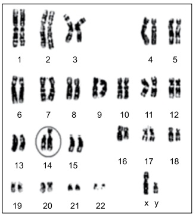
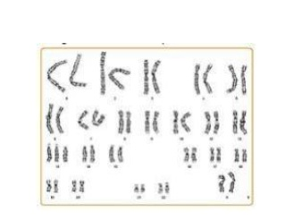

Mãe leva lho de 28 dias de idade para consulta de puericultura em Unidade Básica de Saúde. Lactente em bom estado geral, em aleitamento materno exclusivo, sem alterações no exame físico. A genitora traz o resultado do teste do pezinho, o qual apresentou baixa atividade da enzima galactose-1-fosfato uridil-transferase. Frente a isso, a pediatra solicitou novo exame, o qual confirmou o resultado anterior. Frente ao quadro, trata-se da conduta mais adequada para este lactente:
Adolescente de 13 anos chega ao consultório para uma consulta de rotina. Sua mãe relata que ele parece muito mais imaturo e inseguro do que seu lho mais velho quando na mesma idade. Seu rendimento escolar está abaixo da média. No exame físico ele está no percentil 95 de altura para a idade, suas extremidades são mais longas do que o esperado e ele mostra-se constrangido por causa da ginecomastia. Está em estágio 1 do desenvolvimento sexual de Tanner e apresenta gônadas pequenas. O diagnóstico mais provável é:
Mãe de 28 anos, primigesta, sem comorbidades, há 24 horas deu à luz a um recém-nascido a termo, adequado para a idade gestacional. O pré-natal foi adequado e sem intercorrências. O primeiro exame clínico completo do recém-nascido não apresentou alterações. A mãe refere preocupação com relação à investigação de fenilcetonúria, pois tem histórico familiar da doença. Ela insiste na realização imediata de exames que identifiquem a doença. Com relação ao exame de triagem para a doença em questão, está correto afirmar:
Menina de 5 anos vem à consulta para avaliar crescimento abaixo do esperado, principalmente após os 2 anos de idade. Pais hígidos e não consanguíneos (estatura do pai = 173 cm e da mãe = 161 cm) negam parada de crescimento ou doenças prévias da criança associadas ao crescimento inadequado. Antecedentes perinatais não apresentam alterações, nem há evidência de tocotrauma (parto cesárea a termo, com apgar 8/9, peso de 2,9 kg e comprimento de 48 cm). O desenvolvimento psicomotor foi adequado, fez aleitamento materno exclusivo por 5 meses e alimentação atual é satisfatória. Funções eliminatórias estão normais. Não foi submetida a cirurgias, internações ou acidentes (trauma crânio- encefálico). Ao exame físico: bom estado geral, corada, ativa, sem desvios fenotípicos, propedêutica cárdio/pulmonar normal, abdome sem visceromegalias, extremidades sem alterações. Escore Z Peso/Idade= -0,6 DP, Escore Z Estatura/idade= -2,1DP e relação SS/SI: 1,1. Tanner M1 P1. Exames subsidiários recentes (hemograma, função tireoidiana, lipidograma, sedimento urinário) não revelam alterações, e radiogra a de mãos e punhos apresenta a idade óssea de, aproximadamente, uma criança com 4 anos e 06 meses, segundo o atlas de Greulich-Pyle. Para esse caso, a hipótese diagnóstica mais provável e a condução mais apropriada são:
Primigesta 22 anos, 36 semanas de idade gestacional, dá à luz um neonato do sexo masculino, com peso de 2.236 g e Apgar: 4/6/7. Ultrassons realizados no pré-natal indicaram arrinencefalia, cardiopatia complexa, punhos cerrados e plantas arqueadas. Ao nascimento observou-se fenda labial e palato fendido, hipotelorismo ocular, microftalmia bilateral, orelhas malformadas e de baixa implantação e criptorquidia. O diagnóstico mais provável é trissomia do cromossomo:
Recém-nascida apresenta edema importante de pés, pescoço alado, hipertelorismo mamário e 4º metacarpo curto. A síndrome mais provável é a de:
Considerando a saúde bucal das crianças com síndrome de Down (SD), é correto afirmar :
O parto eletivo de uma gestante de 41 anos, com rotina pré-natal irregular (sem ecocardiogra a fetal), foi realizado sem intercorrências. Ao nascimento, o exame físico indicou aspecto sindrômico e sopro cardíaco. Ecocardiograma feito aos 3 dias de vida mostrou defeito do septo atrioventricular completo. Qual das síndromes abaixo é a mais frequente na presença dessa cardiopatia estrutural?
Com relação ao acompanhamento de pacientes com Síndrome de Down, é correto afirmar que:
Criança com suspeita de síndrome genética, com cariótipo cujo resultado é 47, XY, +21, possui a síndrome de:
Recém-nascido recebe diagnóstico de síndrome de Down no momento do nascimento. Não havia conhecimento dos pais durante a gestação sobre essa condição clínica. A mãe realizou duas ultrassonogra as obstétricas de rotina e a morfológica, sendo ambas normais. Algumas condições clínicas estão mais associadas a essa síndrome, devendo ser sistematicamente investigadas. O pediatra considera realizar exames de rotina para esse paciente. Sobre esses exames, analise os itens abaixo: I. Mielograma para afastar leucemia congênita. II. Esofagograma pela elevada associação com atresia de esôfago e fístula traqueoesofágica. III. Ecocardiograma transtorácico para diagnóstico de cardiopatias. IV. Avaliação da função tireoideana devido ao risco de hipotireoidismo congênito. A conduta CORRETA incluiria os seguintes exames:
Recém-nascido a termo alimentado exclusivamente com leite materno é internado em UTI neonatal logo ao nascimento pela suspeita de sepse neonatal. No quinto dia de vida, inicia convulsão, vômitos e icterícia. Ao exame, encontrase letárgico, ictérico 3+/4+ (zona IV de Kramer), acianótico, desidratado +/4+, corado, com boa perfusão periférica. Apresenta hepatoesplenomegalia à palpação de abdômen. O restante do exame físico é normal. Foram colhidas amostras de sangue e líquor com resultados normais, mas a urina apresenta substâncias redutoras à análise. O diagnóstico mais provável é:
Menino de 6 meses com suspeita de síndrome de Down (SD) comparece à consulta com seus pais. Cariótipo: 46,XY t(14,21)(14q;21q), como na imagem. Para a orientação de seus pais, é importante

Recém-nascido de 18 dias, sexo masculino, nascido a termo e peso de nascimento de 3.100 g. Realizou exame de triagem neonatal biológica (Teste do pezinho) com 5 dias de vida. Todos os exames vieram normais com exceção da dosagem de Fenilalanina: 1ª dosagem: Fenilalanina de 15,5 mg/dL. 2ª dosagem: Fenilalanina de: 17,5 mg/dL. Com base no exposto, qual é a conduta adequada para a situação?
Recém-nascido do sexo feminino que apresenta, no exame físico, pescoço alado, edema de dorso de mãos e pés, sopro cardíaco em foco aórtico é portadora da síndrome de:
Quanto à síndrome de Noonan, assinale a alternativa correta.
Menino, 4 0 dias, e m aleitamento materno exclusivo, t e m diagnóstico de galactosemia, confirmado pe la dosagem enzimática d a galacto se-1 -fosfato uridil transferase (GALT). A ORIENTAÇÃO ALIMENTAR BASEADA NO DIAGNÓSTICO É:
A trissomia 13 é a anomalia cromossômica causada por uma cópia extra do cromossomo 13, que causa defeitos graves ao cérebro, olhos, face e coração do bebê. Acerca da trissomia 13, é CORRETO afirmar:
A Síndrome de Down é a mais frequente das síndromes de defeitos congênitos múltiplos associados a retardo mental. Seus sinais clínicos caracterizam-se por dismor smos, malformações congênitas e outras condições clínicas comumente associadas. Quanto às principais características da Síndrome de Down ao nascer, é CORRETO afirmar:
Menino, 18 meses de idade, chega sem queixas em consulta regular de puericultura. Exame físico: massa endurecida em hipocôndrio esquerdo, imóvel com a respiração, hipospádia e membro inferior direito maior que o esquerdo, sem outras alterações. Com base no exame físico, qual a primeira hipótese diagnóstica?
Recém-nascido a termo, do sexo feminino, nascido de parto vaginal, apresentou linfedema no dorso dos pés e das mãos e ausência de pulsos nos membros inferiores. Realizado ecocardiograma compatível com coarctação da aorta. Não foram identi cadas outras anomalias e nem desproporções corporais. Dados antropométricos: peso: 2.900g, comprimento: 44cm e PC: 33cm. O diagnóstico mais provável é:
Lactente nascida com 38 semanas de gestação, 4 kg, apresenta problemas generalizados de crescimento, hipotonia, ssuras palpebrais oblíquas, pregas epicânticas, pele redundante na nuca, clinodactilia de quinto dedo, aparência quadrada dos pés e das mãos e prega palmar transversa única. Mãe com 39 anos de idade. Considerando o diagnóstico de Síndrome de Down:
A galactosemia clássica é uma doença autossômica recessiva do metabolismo de carboidratos em razão da severa de ciência da enzima galactose-1-fosfatouridiltransferase (GALT). Quais as complicações típicas da criança não tratada com diagnóstico tardio da galactosemia clássica?
A síndrome de Down é a anomalia cromossômica mais comum em recém-nascidos vivos e a forma mais frequente de de ciência intelectual causada por alteração cromossômica. Quais das alterações dismór cas NÂO são caraterísticas desta síndrome:
Revisar: possível letra faltando em enunciado
Recém-nascido de 15 dias de vida foi internado em uma UTI neonatal com quadro de icterícia, convulsões e insu ciência hepática. Vinha em uso de leite materno exclusivo. Exame físico: mau estado geral, icterícia + + +/4, hepatoesplenomegalia, ascite e catarata. Os exames laboratoriais demonstraram: ALT (alanina aminotransferase) = 380 U/L (Valor de referência < 31 U/L); AST (aspartato aminotransferase) = 690 U/L (Valor de referência < 30U/L); Gama GT = 200 U/L (Valor de referência = 50U/L); INR (tempo de protombina) = 2,0; Bilirrubina total = 18,3 mg/dl; Bilirrubina direta (BD) = 10,0 mg/dl; Proteína total = 6,5 g/dl e albumina = 2,8 g/dl; Hemocultura: positiva para E. coli. Qual a hipótese diagnóstica mais provável?
As trissomias dos cromossomos 13, 18 e 21 resultam, respectivamente, em quais síndromes genéticas?
Neonato, sexo feminino, nasce de parto vaginal, 36 semanas, P: 2.000g, E: 40 cm PC: 28 cm, APGAR: 7/8. Mãe com 38 anos fez pré-natal completo e não apresentou intercorrências clínicas durante a gestação e parto. Desenvolve desconforto respiratório precoce e mesmo após colocação sob capacete de oxigênio, mantém oximetria de 80%. Observa-se hipoatividade e hiporreatividade ao manuseio, postura de extensão dos membros superiores e inferiores, cabeça pende para trás durante a manobra de tração, di culdade de liberação de vias aéreas, braquicefalia, ssuras palpebrais inclinadas para cima, braquidactilia, língua protrusa e boca entreaberta. O diagnóstico mais provável é trissarnia do cromossoma:
Menina, 6 meses, com Síndrome de Down. Durante consulta de seguimento, a mãe questiona sobre a possibilidade de ter outro lho com a mesma síndrome, com um parceiro diferente do pai desta menina. A atitude mais adequada, nesta situação é:
Recém-nascido (RN), masculino, prematuro de 34 semanas, 2.150g, com síndrome de biliosos após as primeiras mamadas, ainda no berçário. Não eliminou mecônio. Exame físico: corado; acianótico; ictérico; desidratado; taquipneico; afebril. Ausculta pulmonar: normal. Exame abdominal: sem distensão, com sinais de irritação peritoneal e a peristalse normal. A sonda orogástrica drenava liquido esverdeado. RX simples de abdome: sinal da dupla bolha. A hipótese diagnóstica mais provável é:
Criança com diagnóstico de síndrome de Down tem o cariótipo mostrando trissomia do cromossomo
Os pacientes com Síndrome de Down apresentam mais frequentemente:
A monossomia do X, gerando um cariótipo 45,X, caracteriza a síndrome genética de:
Menina, 6 meses, com Síndrome de outro filho com a mesma síndrome, com um parceiro diferente do pai desta menina. A atitude mais adequada, nesta situação é:
Crianças com trissomia do 21 apresentam predisposição de até 20 vezes em desenvolver leucemia. Estudos genéticos e moleculares demonstram que essa probabilidade aumentada se dá pela presença de
Recém-nascido a termo, com crescimento intrauterino retardado (CIUR), apresentando implantação baixa de orelhas, sopro sistólico importante, mãos em garra, microftalmia e insu ciência respiratória é internado na UTI-Neonatal. Dentre outros procedimentos realizados no referido recém-nascido, foi colhido cariótipo. Esta trissomia é conhecida como
Recém-nascido a termo, com crescimento intrauterino retardado (CIUR), apresentando implantação baixa de orelhas, sopro sistólico importante, mãos em garra, microftalmia e insu ciência respiratória é internado na UTI-Neonatal. Dentre outros procedimentos realizados no referido recém-nascido, foi colhido cariótipo. Nesse caso qual é o resultado do cariótipo?
Quanto à síndrome de Down, marque a alternativa correta:
São alterações comuns em crianças com a Síndrome de Down, além da cardiopatia:
Adolescente do sexo masculino com 14 ano apresenta aumento do volume mamário bilateralmente. Refere que isso ocorreu há cerca de 2 anos junto com o desenvolvimento dos pelos e do pênis. Ao exame físico: altura 176 cm, M3 bilateral, P4, pênis com 6 cm de comprimento esticado e testículos com 3 mL de volume bilateralmente. Quais exames devem ser solicitados?
Recém-nascido de termo é levado pela mãe em consulta médica devido à queixa de amarelecimento da pele e dos olhos, vômitos, irritabilidade e di culdade para se alimentar. O resultado do teste do pezinho expandido veio alterado, indicando provável galactosemia. Dentre as condutas abaixo, a melhor conduta é
Em relação aos aspectos etiológicos, clínicos e de acompanhamento dos pacientes com síndrome de Down, afirma-se: I. A alteração cromossômica mais prevalente na etiologia é a translocação do 21 com qualquer outro cromossomo. II. A hipotonia é a alteração clínica mais comum, já percebida no período neonatal imediato. III. A pesquisa sérica da doença celíaca e a pesquisa radiológica de instabilidade ou luxação atlantoaxial fazem parte dos cuidados de supervisão das crianças acometidas. Está/Estão correta(s) apenas a(s) afirmativa(s)
Recém-nascido, com sete dias, apresenta recusa alimentar, vômitos, letargia e convulsão. Exames laboratoriais: aumento da amônia plasmática, hiato aniônico elevado e acidose. A desordem metabólica mais provável neste RN é:
Na consulta de puericultura, aos 30 dias de vida, um lactente saudável, alimentado exclusivamente no seio e sem alterações no exame físico, o teste do pezinho apresentou baixa atividade da enzima galactose-1-fosfato uridil-transferase. Novo exame confirmou o resultado anterior. A conduta mais adequada para este lactente é:
Um lactente pequeno para a idade gestacional, lho de mãe com 35 anos, apresenta orelhas malformadas e de implantação baixa, microcefalia, pés ""em mata-borrão"" (com as plantas arqueadas), hérnias inguinais, fenda labial e palatina e micrognatia. A análise cromossômica, provavelmente, irá revelar qual das seguintes condições?
Em relação à Síndrome Alcoólica fetal, NÃO se pode afirmar:
Nasceu uma criança com fenda palpebral oblíqua, orelhas de implantação baixa, braquicefalia, prega palmar transversal única e clinodactilia dos quintos dedos das mãos. Ao exame clínico, foi suspeitada uma cardiopatia. O geneticista avaliou e suspeitou de uma síndrome cromossômica e solicitou um cariótipo. O cariótipo confirmou uma trissomia autossômica. Assinale a alternativa que apresenta as alterações frequentes nas crianças com a anomalia cromossômica descrita.
Durante consulta cuja queixa principal foi baixa estatura em uma menina de 3 anos de idade, o pediatra observou a presença de baixa implantação das orelhas e cabelo, cubitus valgo, palato ogival e quarto metacarpo curto. Tais dados o zeram solicitar, dentre outros exames, o cariótipo por bandeamento GTG. Para o quadro citado, a principal hipótese diagnóstica a ser aventada é:
A Síndrome de Down é a causa genética mais comum de deficiência intelectual moderada. Na síndrome de Down é correto afirmar:
Erros inatos do metabolismo podem contraindicar o aleitamento materno, apesar dos conhecidos benefícios ao recém- nascido. Dentre as doenças citadas abaixo, aquela para a qual está completamente contraindicado o uso do leite materno é
A opção que mais se associa à síndrome de Poland é:
RN com idade gestacional de 39 semana apresentou crise convulsiva no primeiro dia de vida. Exames laboratoriais evidenciando hipocalcemia. Exame físico com micrognatismo, fenda palatina, baixa implantação de orelhas e hipertelorismo. Realizado ecocardiograma sendo diagnosticado tetralogia de fallot. Qual diagnóstico mais provável?
Menino com de ciência mental, fácies alongada, testa ampla, orelhas grandes e proeminentes, macrorquidia. Qual a principal hipótese diagnóstica?
Uma menina de seis anos de idade, portadora de trissomia do cromossomo 21, sem cardiopatia congênita, apresenta astenia com desaceleração de velocidade de crescimento e ganho de peso normal para a idade, observado após 4 meses da última consulta de rotina, em curva especi ca para a síndrome. Neste caso, a principal hipótese diagnóstica a ser afastada, das relacionadas abaixo, será:
Revisar: possível letra faltando em enunciado
Criança, 4a, com diagnóstico de glicogenose tipo I (doença de Von Gierke) é atendida na Unidade de Emergência com palidez cutânea, sudorese e sonolência. Glicemia capilar = 32 mg/dl. Mãe refere que não está seguindo corretamente a dieta prescrita para o filho. O COMPONENTE QUE ESTÁ FALTANDO NA DIETA DA CRIANÇA É:
Paciente com 14 anos apresenta quadro de amenorréia primária, com baixa estatura, ausência de desenvolvimento puberal e com cariótipo de 45 X0.Tal quadro determina o diagnóstico de:
Em qual erro inato do metabolismo há contraindicação relativa da amamentação, ou seja, situação em que aleitamento materno é permitido sob rigoroso controle clínico e laboratorial?
A trissomia do cromossomo 18 caracteriza a síndrome genética de:
Bebê de aproximadamente 20 semanas de vida é internado por de cit no crescimento, atraso no desenvolvimento, hepatomegalia, diarreia e aspecto septicêmico. Responde bem à infusão de líquidos, porém piora ao mamar no peito da mãe e com o uso de fórmulas infantis acrescidas de ferro. O médico deve iniciar a alimentação com a fórmula:
Na Síndrome de di Giorge, qual principal defeito cardíaco e imunodeficiência associados?
Recém nascido apresenta-se com hipotonia, reflexo de Moro prejudicado, face plana, ssuras palpebrais voltadas para cima, orelhas pequenas e displásticas, hiper exibilidade das articulações, pescoço curto, clinodactilia do quinto dedo, prega palmar única e displasia pélvica. Para esta situação, analise as alternativas abaixo. I - Existe 50% de chance de haver algum defeito cardíaco. II - A maioria destes pacientes apresentará problemas comportamentais. III - Tem uma chance aumentada de desenvolver leucemia. Estão corretas as alternativas.
Analise o Cariótipo abaixo e defina o diagnóstico da Síndrome genética demostrada pelo mesmo.

Adolescente de 12 anos de idade é atendido pelo pediatra apresentando atraso no desenvolvimento neuropsicomotor e di culdade de aprendizagem. Nasceu de parto cesárea (eletiva), sem necessidade de reanimação, a termo e sem intercorrências. AME até 6 meses e com bom ganho ponderoestatural. Demonstra dé cit cognitivo bem aparente, não aceita ser repreendido, sem coordenação motora, ecolalia presente e movimentos estereotipados em MMSS. Antecedentes familiares: pais não consanguíneos, mãe com 36 anos. Pai com inteligencia normal, mãe com sobrinho ( lho da irmã) com quadro clínico semelhante. Ao exame físico: faces alongadas, cabeça e olhos grandes, pregas simiescas em palmas e pés planos. A síndrome mais provável é:
Chega ao consultório um jovem de 14 anos de idade, alto, magro, que está abaixo do peso e aparenta possuir pernas particularmente longas. Seus testículos são pequenos para sua idade e seu pênis também parece ser pequeno. A sua mãe relata que, no início da escola, ele tinha di culdades para ler, mas agora apresenta di culdades em todas as matérias escolares. Qual exame diagnóstico MAIS ADEQUADO para identificar o problema dele?
Menina, 13a, procura atendimento por não apresentar sinais de puberdade. Nega outras queixas. Alimentação, atividade física e sono adequados para a idade. Refere infecção urinária de repetição e di culdade auditiva. Antecedente pessoal: peso e comprimento de nascimento adequados para idade gestacional. Exame físico: peso no percentil 50, estatura abaixo do percentil 3 e IMC entre o percentil 85 e 95 (CDC 2000); baixa implantação dos cabelos na nuca, orelhas rodadas para trás; genitais femininos normais M1P2. Hormônio folículo-estimulante e hormônio luteinizante elevados para idade. A hipótese diagnóstica é:
Recém-nascido a termo, sexo feminino, apresentou linfedema no dorso dos pés e das mãos desde o nascimento e ausência de pulsos nos membros inferiores. Ecocardiograma: coarctação da aorta. Não foram identi cadas outras anomalidas nem desproporções corporais. Dados antropométricos: peso: 2.900g, comprimento: 44cm e PC: 33cm. O diagnóstico mais provável é síndrome de:
Recém-nascido, 10 dias, vem para primeira consulta acompanhado pela mãe. Nega problemas gestacionais, do parto e queixas atuais. Embora a mãe negue ingestão de bebidas alcoólicas, exceto cerveja durante a gestação, no exame físico são detectadas alterações compatíveis com Síndrome Alcoólica Fetal (SAF). É importante explicar para a mãe que:
Uma criança de 4 anos de idade, comparece ao ambulatório acompanhado de sua mãe, porque foi encaminhado do Centro de Saúde pois apresenta-se com feições grosseiras e perda progressiva dos marcos do desenvolvimento. Ao exame físico apresenta hepatoesplenomegalia. Considerando este quadro clínico, a causa mais provável é:
Acerca de tirosinemia neonatal transitória, pode-se afirmar que:
A galactosemia no período neonatal manifesta-se caracteristicamente:
O termo deformidade em genética clínica corresponde a:
A síndrome de Patau é uma trissomia cromossômica do par
Você atende um menino de 10 anos de idade com alta estatura. Está acima do percentil 97th da curva de estatura/idade da Organização Mundial de Saúde e cresce acima da estatura média dos pais. Ele é magro, tem palato em ogiva, escoliose, alto grau de miopia e hipermobilidade articular. Seu desempenho escolar é excelente. Qual é o mais provável diagnóstico deste garoto?
A síndrome de Down pode ser causada por comprometimentos cromossômicos, do tipo trissomia simples, translocação ou mosaicismo. Nos casos de trissomia simples, o paciente apresenta trissomia do cromossomo:
Qual achado dismorfológico NÃO ocorre na Síndrome de Down?
Em relação às anormalidades cromossômicas, podemos afirmar que:
A Trissomia do cromossoma 18 caracteriza a síndrome genética de
Os achados de má alimentação, ganho pôndero-estatural de ciente, atraso motor, fraqueza muscular, infecções respiratórias de repetição, e problemas cardíacos caracterizados por encurtamento do intervalo PR, complexo QRS alargado, cardiomegalia e cardiomiopatia, são típicos de qual doença?
Revisar: possível letra faltando em enunciado
Lactente de duas semanas em aleitamento materno exclusivo apresenta-se com icterícia persistente, vômito, letargia e irritabilidade. O exame físico revela pouco ganho ponderal, icterícia e hepatomegalia. A mãe relata que a criança apresentou episódios de hipoglicemia no berçário. Você suspeita de galactosemia. Qual das seguintes características NÃO é tipicamente associada à galactosemia clássica?
Ao examinar um recém-nascido, encontra-se restrição de crescimento intrauterino, nariz antevertido, micrognatia, ausência de surco nasolabial, lábio superior no e ssuras palpebrais pequenas. Em relação ao caso clínico apresentado, assinale a alternativa que corresponde à droga provavelmente consumida pela genitora do paciente.
Recém-Nascido, Pequeno para Idade Gestacional (PIG), apresenta microcefalia, lábio superior no e fenda palpebral pequena. Qual substância pode ter sido usada pela mãe?
A tríade alta estatura, macroglossia e exonfalocele são compatíveis com:
Adolescente de 12 anos inseguro e imaturo com hipogonadismo, retardo de desenvolvimento e membros longos. O diagnóstico mais provável para essa causa é:
Menina, 3m, trazida por responsável pelo abrigo, refere que criança chegou há cerca de uma semana, vinda diretamente da maternidade onde foi acolhida logo após o nascimento. Mãe é moradora de rua, tem cerca de 40 anos, alcoolista e usuária de drogas ilícitas, sem acompanhamento pré-natal. Parto foi natural, na rua, logo após a criança foi recolhida e a mãe desapareceu. Apresentou baixo peso ao nascer e baixo ganho ponderal nestes 3 meses, não teve intercorrências. Exame físico: peso, comprimento e perímetro cefálico no percentil 3 da curva de referência, fendas palpebrais curtas, prega epicântica, lábio superior fino, sem outras anormalidades. O DIAGNÓSTICO É:
O diagnóstico mais provável de uma recém-nascida a termo de 2,9 kg e estatura de 44 cm que apresenta linfedema no dorso dos pés e das mãos desde o nascimento, ausência de pulsos nos membros inferiores, coarctação da aorta ao ecocardiograma sem outras desproporções corporais será a síndrome de:
Recém-nascido a termo, pequeno para idade gestacional, apresenta fronte oblíqua; hipertelorismo ocular; fenda palatina; lábio leporino importante; punhos cerrados; polidactilia de mãos e pés com sobreposição do quinto quirodáctilo sobre o terceiro e o quarto; região plantar arqueada; genitália externa com criptorquidia. O exame de imagem craniana revelou holoprosencefalia. O relato é compatível com síndrome de:
RN com característica de Síndrome de Down, iniciou com aproximadamente 12 h de vida, vômitos de caráter progressivo, tornando-se biliosos. Havia relato na história gestacional de polidrâmnio. Ao exame físico o abdome não apresentava distensão, porém foram visualizadas ondas peristálticas. Realizado radiogra a de abdome que evidenciou a presença de dupla bolha. Diante desses dados, a principal hipótese diagnóstica é:
A trissomia do cromossoma 13, caracteriza qual síndrome genética?
João Vitor, 12 anos de idade, com história de crises convulsivas iniciadas aos 4 anos e controladas com fenobarbital. Apresentava, ainda, atraso no desenvolvimento neuropsicomotor e distúrbio de aprendizagem. O exame físico indicava face alongada, orelhas grandes (em abano), macroquidia, hiperextensibilidade articular, hiper-reflexia de patelares e sinal de Babinski. Apresenta ainda movimentos estereotipados em membros superiores e distúrbio da fala (ecolalia, linguagem perseverativa, frases curtas, pausas inapropriadas e frequentes interjeições). A avaliação psicológica mostrou pobreza de vocabulário, perseveração, raciocínio lento, di culdade para reter conteúdo, xação de ideias e timidez. Ecocardigrama com prolapso de válvula mitral sem repercussão hemodinâmica e audiometria déficit auditivo com limiar para 60 decibéis. Qual o diagnóstico mais provável para o caso acima:
Qual das Síndromes Genéticas abaixo relacionadas está associada a obesidade.
Lactente de 4 meses de idade com hipotonia generalizada, orelhas pequenas, epicanto, clinodactilia e espaçamento de primeiro e segundo pododáctilos. Para qual dos seguintes problemas a criança apresenta maior risco?
Adolescente com 14 anos de idade não apresenta sinais de puberdade. A mãe relata que ele apresentou retardo no desenvolvimento da fala e que seu rendimento escolar foi sempre inferior ao de seus irmãos. É tímido e, segundo seus professores, imaturo. No exame físico revela desenvolvimento das mamas e membros longos, com uma redução na proporção do segmento superior/inferior. Tem testículos e pênis pequenos. Qual o diagnóstico provável?
Lactente, 3 meses, portador de Síndrome de Down, comparece à consulta médica com história de cansaço às mamadas e baixo ganho de peso desde o nascimento. A HIPÓTESE DIAGNÓSTICA É:
Recém-nascido a termo, AIG, sem história de intercorrências perinatais, sorologias normais, Apgar 9/10, iniciou aleitamento materno exclusivo, com boa sucção. Após o quinto dia observou-se icterícia, hepatomegalia, sucção débil, sinais de sepse e apresentou hipoglicemia. Hemocultura: crescimento de Escherichia coli. O resultado do teste de triagem neonatal foi anormal, sendo sugerida avaliação ocular e a utilização de fórmula de partida à base de soja propiciou uma evolução clínica satisfatória. A principal hipótese diagnóstica é:
Um conjunto de alterações físicas sugere o diagnóstico de síndrome de Down em um recém-nascido. NÃO faz parte dessas alterações:
As mucopolissacaridoses (MPS) compreendem um grupo de doenças metabólicas de envolvimento multissistêmico e de alta morbimortalidade, caracterizada por acúmulo de glicosaminoglicanos (GAGs). Considerando-se o conhecimento atual sobre esse grupo de doenças, assinale a alternativa CORRETA.
São características descritas na Síndrome de Down, EXCETO:
RN, filho de mãe usuária de álcool durante a gestação, apresenta sinais de síndrome alcoólica fetal, do tipo:
Isabel nasceu com hipotonia, reflexo de Moro diminuído, fácies arredondada, pele frouxa na região dorsal do pescoço, clinodactilia do quinto dedo das mãos, ssuras palpebrais oblíquas, pregas epicânticas, língua protrusa, ponte nasal achatada, orelhas pequenas, hiperextensibilidade articular, diástase de reto e hérnia umbilical. Além dessas alterações descritas, pode- se afirmar que nas pessoas com essas alterações:
Em crianças portadoras de síndrome de Down pode-se afirmar que:
Adolescente de 15 anos tem história de fraqueza muscular progressiva a partir do primeiro ano de vida evoluindo para insu ciência respiratória, com reflexos tendinosos profundos abolidos, di culdade de deglutição e hepatomegalia. Dentre os exames realizados na ocasião da investigação diagnóstica, apresentava baixa atividade da alfaglicosidase ácida em fibroblastos de pele cultivados. O diagnóstico desse paciente é;
Os pacientes com síndrome de Down são mais propensos a apresentar:
A triagem neonatal para anomalias cromossomiais, sobretudo as síndromes de Down e Edwards pode ser feita baseada em dados clínicos, laboratoriais e sonográ cos. Os exames laboratoriais que associados a translucência nucal e a idade materna apresentam maior sensibilidade e especi cidade na detecção dessas anomalias e subsequente melhoria na qualidade da triagem das pacientes a serem submetidas a estudo genético invasivo são:
Revisar: possível letra faltando em enunciado
Recém-nascido prematuro, recebendo dieta rica em proteínas e com bom aspecto geral, apresentou níveis plasmáticos aumentados de fenilalanina e tirosina plasmática aumentada acima de 60 mg%. Qual é o diagnóstico mais provável? Respostas: 1 12 23 34 45 56 67 78 89 100